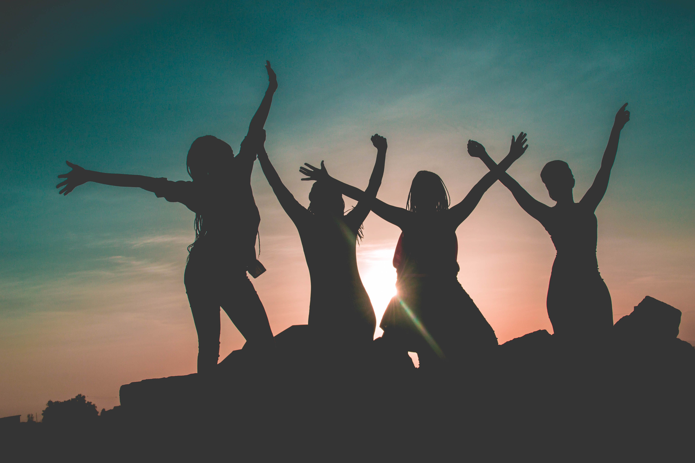

Voz Segura
sua voz tem força, sua vida tem valor.
A violência contra as mulheres tem sido uma pauta muito discutida na sociedade

imagem de: https://www.cnj.jus.br/
A violência contra a mulher é um problema social grave e amplamente discutido na atualidade, é a agressão contra as mulheres, muita das vezes esse tema perde a atenção que deveria ter, o brasil é um recordista em casos de violencia doméstica.A Conferência das Nações Unidas sobre Direitos Humanos (Viena, 1993) reconheceu formalmente a violência contra as mulheres como uma das formas de violação dos direitos humanos. Desde então, os governos dos países-membros da ONU e as organizações da sociedade civil trabalham para a eliminação desse tipo de violência, que já é reconhecido também como um grave problema de saúde pública. O Brasil é signatário de todos os tratados internacionais que objetivam reduzir e combater a violência de gênero.
fonte: https://www.cnj.jus.br/
O intuito deste site e deste projeto é coincientizar e mostrar que as mulheres não estão sozinhas, e mostrar também aos agressores que nada passa batido!! Se você está passando por algo que está te fazendo mal, procure ajuda!!
Programas
Programa mulher viver sem violência Programa Justiça pela paz em casa Aplicativo mulher seguraa agressão e a opressão doméstica, pode ser causada por varios fatores:
- Ciumes possessivo
- Descontrole emocional e possesividade
- abuso de drogas ou alcool
- Falta de respeito dentro da relação
- Machismo e desigualdade de genero
dentre outras varias coisas, esses são os fatores principais
ATENÇÃO!!!
se voce sofre com esses fatores, BUSQUE AJUDA!!